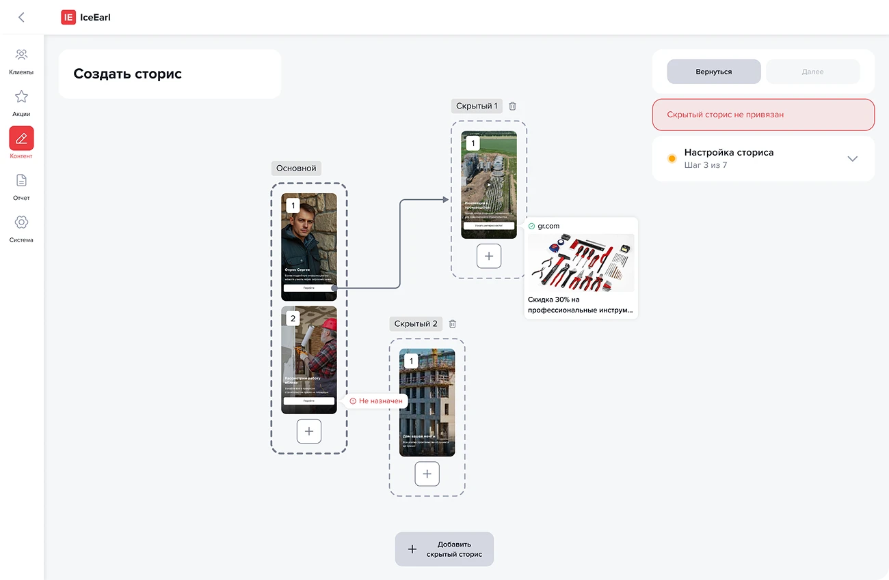
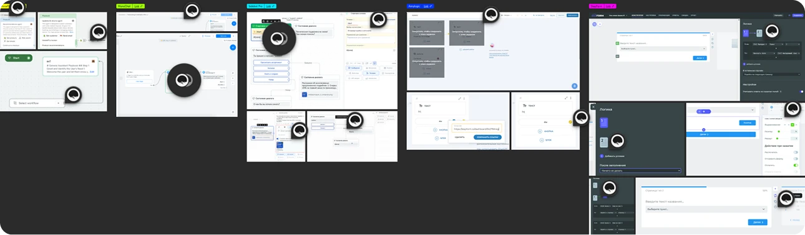
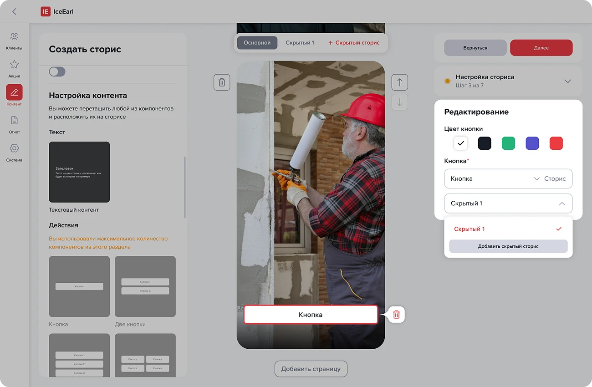
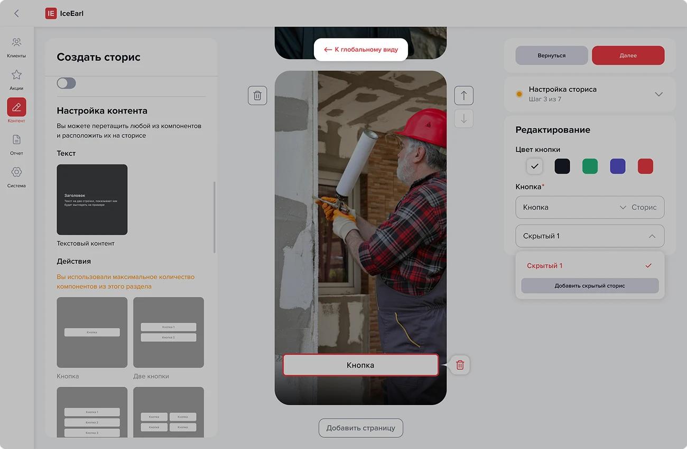
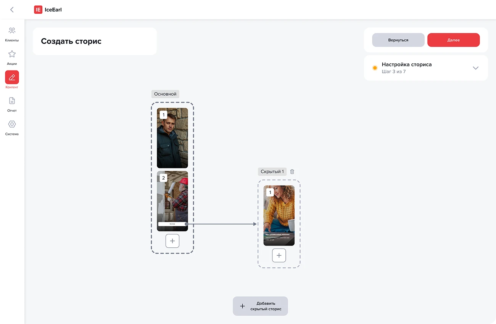
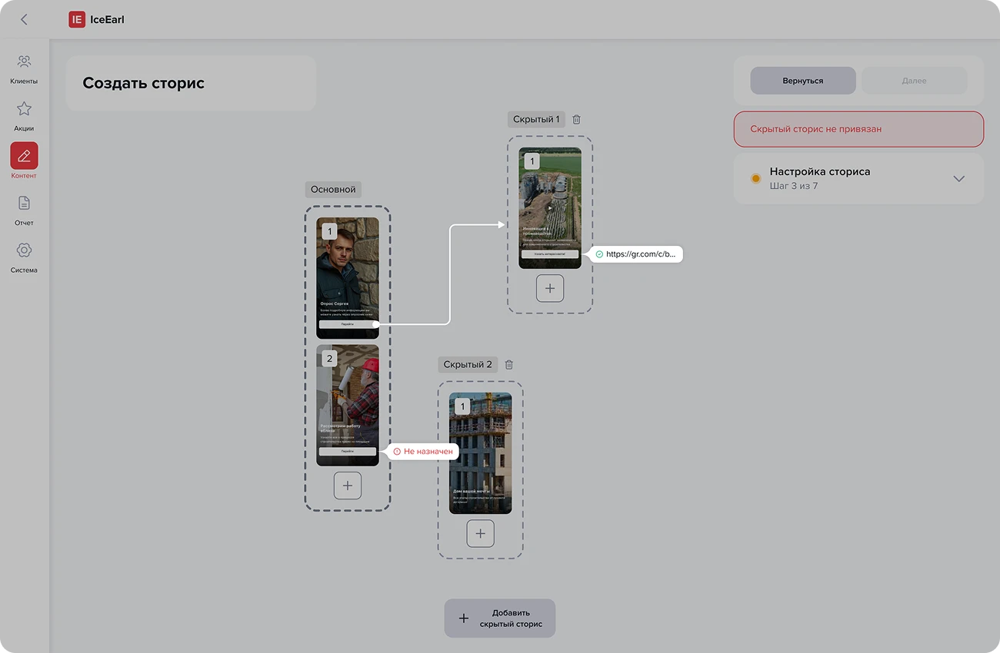
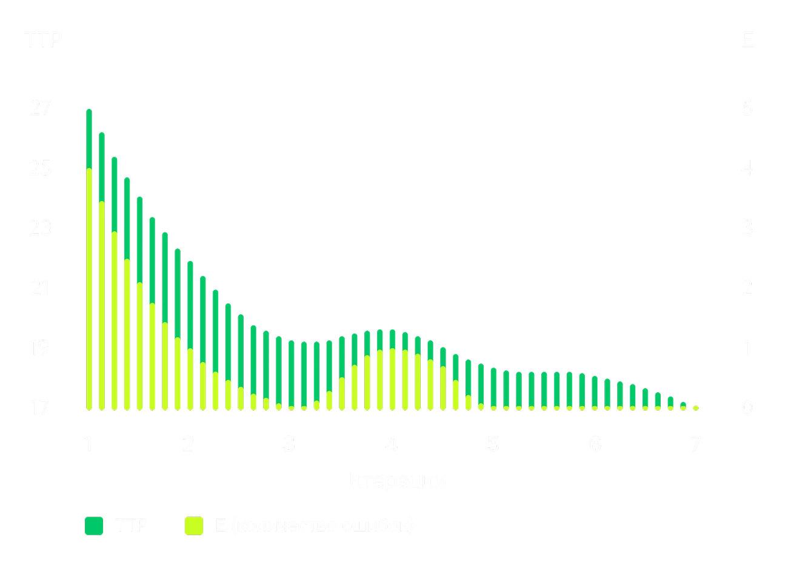
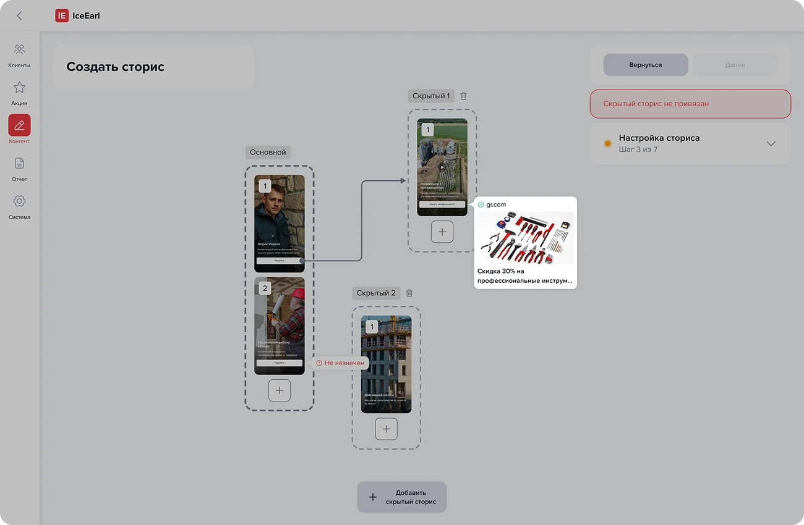
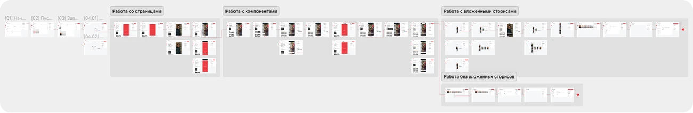

Конструктор сторисов
Или как менеджеры начали создавать сторисы за 20 минут с минимальными ошибками
Или как менеджеры начали создавать сторисы за 20 минут с минимальными ошибками


В мобильном приложении компании промо-сторисы используются как важный инструмент маркетинга и привлечения пользователей. Чтобы автоматизировать работу с этим контентом, мы с командой создали внутренний конструктор с готовыми пресетами
После запуска первой версии выяснилось, что при создании сложных цепочек сторис опытные менеджеры вынуждены вручную проверять каждый экран. Отсутствие обзора всей архитектуры сильно замедляло работу и приводило к публикации неработающих сценариев на проде
В рамках этой задачи я отвечал за проведение юзабилити-тестирования, конкурентный анализ, описание пользовательских сценариев и проектирование макетов. Все визуальные и логические решения проходили регулярное дизайн-ревью со старшим дизайнером
Ключевыми метриками являются время на выпуск сториса и количество ошибок. Average ticket handle time (ATHT) и Error rate (ER)
Выделили два сегмента пользователей: новички и менеджеры. Новички работают с небольшими сторисами и редко сталкиваются со сложными переходами. Менеджеры собирают большие сценарии, поэтому ручная проверка переходов замедляет работу и увеличивает количество ошибок
Чтобы найти подходящие решения, я провёл конкурентный анализ, отметил для себя интересные феномены и инсайты

Анализ конкурентов и пользовательских сценариев позволил сформулировать гипотезу: если дать менеджеру единое представление о структуре связей и подсветить проблемные места, то время ручной проверки сократится, а количество ошибок снизится
Для проверки этой гипотезы мы рассмотрели несколько интерфейсных решений: интерактивный холст, отдельный блок со всеми переходами, карта экранов, статусы кнопок и подсветку проблемных мест
В этом кейсе я сфокусируюсь на двух решениях: интерактивный холст и статусы кнопок
В изначальной версии пользователю необходимо было сначала нажать на кнопку, чтобы понять, куда она ведет

Было принято решение, убрать сверху табы и поместить туда возможность открыть глобальный вид (холст)

Теперь менеджеры могут видеть все связи и переходы не только на уровне отдельного экрана, но и в едином макро-виде всей структуры сториса на интерактивном холсте

Также добавили визуальные состояния кнопок, позволяющие сразу определить, ведёт ли кнопка в скрытый сторис, на внешнюю ссылку или переход не назначен

После внедрения провели повторное юзабилити-тестирование, чтобы проверить влияние на ATHT и ER
До изменений менеджеры тратили в среднем 25 минут на сложный сторис с вложенными переходами, после внедрения глобального вида время сократилось до 20 минут и 16 секунд
Доля ошибочных линковок и кнопок без перехода снизилась с 15% до 2%
Результаты основаны на 7 итерациях сценариев с 2 менеджерами

В первых итерациях время выросло из-за адаптации к новому интерфейсу. После адаптации они начали чаще использовать его для проверки сценария, что снизило когнитивную нагрузку
Лучший результат получился в 17 минут и 24 секунды
На 4-й итерации тестирования остались ошибки, связанные с внешними ссылками. Чтобы закрыть эту проблему, мы добавили превью внешних ссылок прямо в глобальном виде

Теперь менеджер сразу видит превью, название сайта и домен без полного хэша ссылки
Это простое изменение позволило почти полностью убрать ошибки на внешних ссылках. Лучший результат по времени публикации составил 16 минут 13 секунд

Упростил проверку переходов между сторисами и устранил главное узкое горлышко конструктора, что положительно сказалось на TTP и ER
Этот проект ещё раз подтвердил, что в инструментах для non-designer необходима мгновенная видимость состояния. Следующим шагом я вижу добавление возможности редактировать переходы прямо из глобального вида — это может ещё сильнее сократить время работы